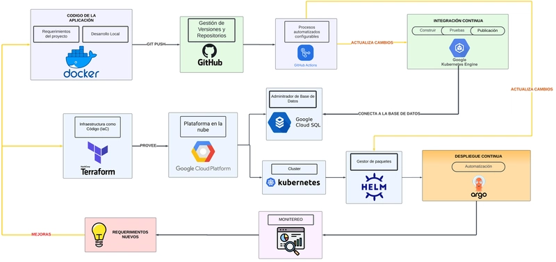
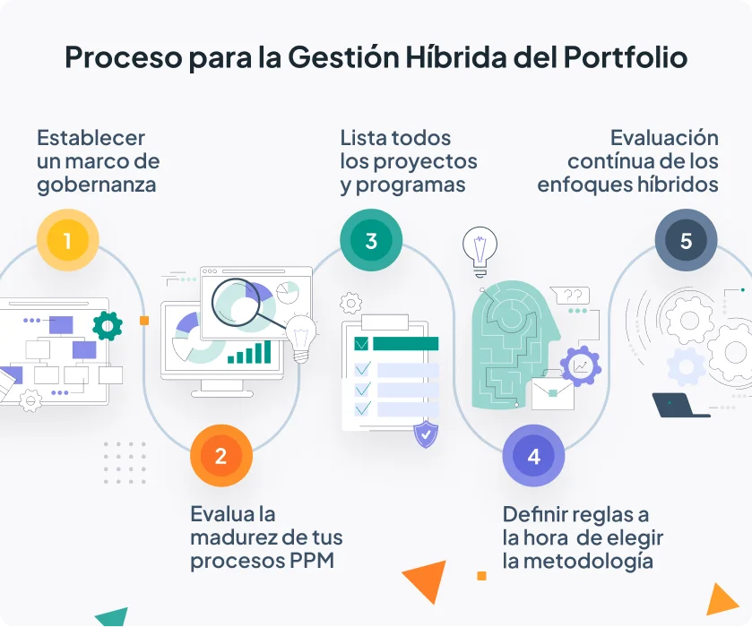

Semana 08: Gestión de aplicaciones para la nube híbrida
En esta semana estudiaremos la gestión de aplicaciones en entornos de nube híbrida: patrones de despliegue, plataformas (Azure Arc, Anthos, OpenShift, VMware), buenas prácticas (IaC, GitOps, observabilidad) y cómo diseñar pilotos para modernizar aplicaciones críticas preservando control y cumplimiento.
Figura: Ecosistema de nube híbrida y componentes clave (infraestructura, control y observabilidad).
Objetivos de aprendizaje
Comprender el paradigma de nube híbrida y sus beneficios para la modernización.
Identificar patrones de despliegue y operación (Kubernetes, GitOps, IaC, event-driven).
Conocer plataformas representativas: Azure Arc, Google Anthos, Red Hat OpenShift, VMware Aria.
Diseñar una estrategia de seguridad, gobernanza y CostOps para entornos híbridos.
Planificar un piloto técnico para migrar/modernizar una aplicación crítica con observabilidad y automatización.
Contenido
1. Introducción: ¿Qué es la nube híbrida?
La nube híbrida combina entornos (on-premises y cloud público/privado) para ejecutar aplicaciones y almacenar datos donde tenga más sentido (latencia, coste, cumplimiento). Permite aprovechar servicios cloud sin renunciar al control sobre datos críticos.
Optimización de coste y rendimiento.
Control y cumplimiento de datos sensibles.
Resiliencia y estrategia multi-cloud para evitar vendor lock-in.
2. Patrones de gestión y despliegue
Patrones habituales para portar y operar aplicaciones en híbrido:
Contenerización + Kubernetes: portabilidad y orquestación (K8s).
GitOps / IaC: despliegues declarativos y reproducibles (Terraform, ArgoCD/Flux).
Extensión de servicios: Azure Arc, Anthos, Outposts para traer capacidades cloud al datacenter.
Event-driven / Streaming: integración desacoplada y resiliente (Kafka).

Patrones comunes: contenedores, GitOps e infraestructura declarativa.
3. Retos operativos y requisitos
Gestionar apps en híbrido exige atención a visibilidad, seguridad, gobernanza y control de costes.
Visibilidad unificada: logs, métricas y traces.
Políticas de seguridad consistentes (IAM, encriptación, posture management).
CostOps: showback/chargeback y rightsizing continuo.
Resiliencia: DR, failover y pruebas periódicas.
4. Plataformas y tecnologías representativas
Ejemplos de plataformas y su foco:
Azure Arc: extensión de servicios Azure a entornos on-prem y multi-cloud.
Google Anthos: gestión Kubernetes híbrida y multi-cloud.
Red Hat OpenShift / IBM Cloud Pak: Kubernetes empresarial y stack containerizado.
VMware Aria / vRealize: operaciones en infra heterogénea y cara a migraciones legacy.
HashiCorp: Terraform para IaC, Consul para service discovery y Vault para secretos.

Plataformas representativas para gestión híbrida.
5. Video: Componentes del Control Plane y Data Plane en Kubernetes
Exploración visual de los componentes clave de Kubernetes: kube-apiserver, etcd, kube-scheduler, kubelet, kube-proxy, y más. Se abordan tanto el plano de control como el de datos, junto con elementos complementarios como red y almacenamiento.
Video explicativo: Arquitectura interna de Kubernetes
6. Buenas prácticas y gobernanza
Definir objetivos de negocio antes de elegir arquitectura.
Adoptar API-first y contenedores para portabilidad.
Usar IaC + GitOps para reproducibilidad y auditoría.
Políticas centralizadas de identidad y seguridad (policy-as-code).
En la Semana 08 abordamos la gestión de aplicaciones en la nube híbrida, sus patrones de modernización, retos operativos y plataformas clave. El foco práctico es diseñar un piloto que demuestre portabilidad, observabilidad y control de costes, usando contenedores, IaC y GitOps como pilares.
¿Quieres que además genere la guía técnica del laboratorio con Dockerfile, YAMLs, Terraform y pipeline CI/CD listo para tu repositorio? Puedo generarlo ahora.